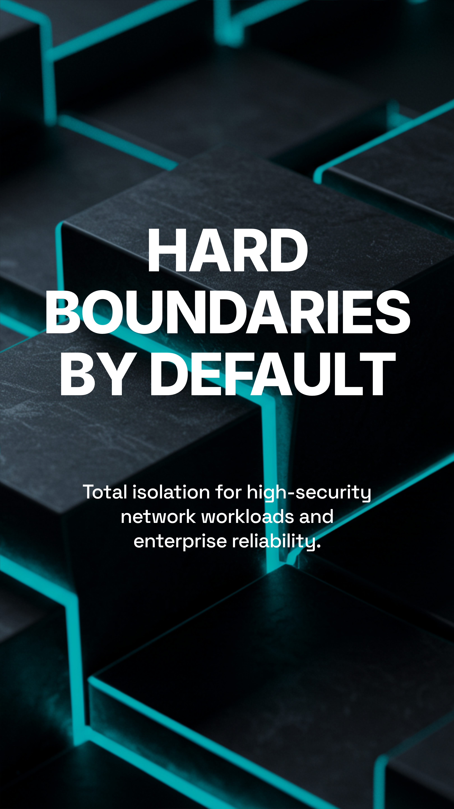

Control the Execution Boundary.
Secure, governed execution infrastructure for multi-tenant and AI-native platforms.
Execution is separate from Application Logic.
TotyLabs redefines execution as an operational boundary, not a feature. We provide the deterministic infrastructure required to run untrusted algorithms safely.
Deterministic by Design
Eliminate variances. Every execution yields the exact same result, regardless of the underlying hardware.
Isolation by Default
Hard architectural boundaries. Zero containment breach capability for untrusted code.
Multi-Tenant by Architecture
Designed for high-density platform environments where tenant separation is non-negotiable.
Governed for Production
Full lifecycle control, version pinning, and compliance auditing for mission-critical stacks.

Open Source Edition
The modular, extensible execution substrate. Build custom runtimes with zero restrictions.
View DocumentationEnterprise Edition
Production-hardened, support-backed infrastructure for high-consequence environments.
Explore Enterprise